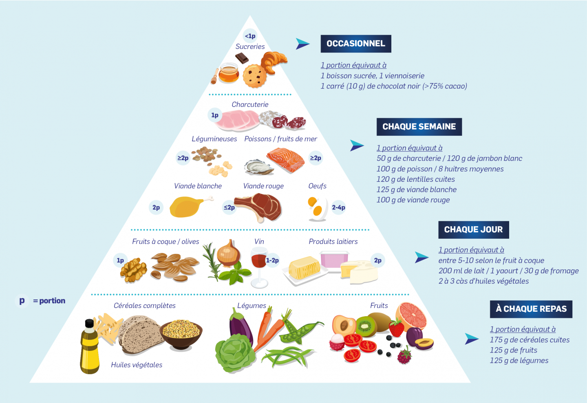

La consommation d’au moins 400 g, soit cinq portions, de fruits et légumes par jour réduit le risque de maladies non transmissibles et permet de garantir un apport quotidien suffisant en fibres alimentaires. Voici quelques pistes pour augmenter la consommation de fruits et légumes : manger des légumes à tous les repas ; manger des fruits frais et des légumes crus comme en‑cas ; consommer des fruits et des légumes frais de saison ; et diversifier les fruits et les légumes consommés.
La diminution des apports totaux en graisses à moins de 30 % de l’apport énergétique total permet aux adultes d’éviter de prendre trop de poids (1,2,3). En outre, le risque de développer des maladies non transmissibles baisse en adoptant les comportements suivants : réduction des graisses saturées à moins de 10 % de l’apport énergétique total ; réduction des acides gras saturés à moins de 1 % de l’apport énergétique total ; et remplacement des graisses saturées et des acides gras trans par des graisses insaturées, en particulier par des graisses polyinsaturées.
Il est possible de réduire les apports en graisses, en particulier en acides gras trans industriels en procédant comme suit : cuire à la vapeur ou faire bouillir plutôt que frire les aliments ; remplacer le beurre, le saindoux et le beurre clarifié par des huiles riches en graisses polyinsaturées comme l’huile de soja, de colza, de maïs, de carthame ou de tournesol ; manger des produits laitiers allégés et de la viande maigre, ou retirer la graisse visible de la viande ; et limiter la consommation d’aliments cuits au four et frits, ainsi que d’en‑cas et d’aliments préemballés (par exemple des beignets, des gâteaux, des tartes, des cookies, des biscuits et des gaufres) qui contiennent des acides gras trans industriels.
La plupart des gens ont des apports excessifs en sodium à cause de la consommation de sel (en moyenne 9 g à 12 g de sel par jour) et des apports insuffisants en potassium (moins de 3,5 g). Cela contribue à l’hypertension artérielle qui, elle‑même, accroît le risque de cardiopathies et d’accident vasculaire cérébral. Chaque année, 1,7 million de décès pourraient être évités en réduisant la consommation de sel pour atteindre le niveau recommandé de moins de 5 g par jour (12). Souvent, les gens n’ont pas conscience des quantités de sel qu’ils consomment. Dans de nombreux pays, la plupart du sel provient des aliments transformés (par exemple les plats préparés, les viandes transformées comme le bacon, le jambon ou le saucisson, les fromages, et les en‑cas salés) ou des aliments consommés fréquemment en grandes quantités (par exemple le pain).
Le sel est également ajouté en cours de cuisson (par exemple sous forme de bouillon ou de bouillon‑cube, de sauce de soja et de sauce de poisson) ou encore à table (sel de table). La consommation de sel peut être limitée en adoptant les stratégies suivantes : limiter la quantité de sel et de condiments à forte teneur en sodium (par exemple la sauce soja, la sauce de poisson et le bouillon) ajoutée pendant la cuisson et la préparation des aliments ; ne pas mettre de sel ou de sauces à forte teneur en sodium sur la table ; limiter la consommation d’en‑cas salés ; et choisir des produits à faible teneur en sel. Certains fabricants reformulent les recettes pour réduire la teneur en sel dans leurs produits et il est utile de contrôler les étiquettes pour vérifier la teneur en sodium d’un produit avant de l’acheter et de le manger. On peut augmenter l’apport en potassium, susceptible d’atténuer les effets négatifs d’une forte consommation de sel sur la tension artérielle, en mangeant des fruits et légumes frais.
Chez les adultes comme chez les enfants, la consommation de sucres libres ne devrait pas dépasser 10 % de l’apport énergétique total. Passer en dessous de 5 % de l’apport énergétique total permettrait d’augmenter les bienfaits pour la santé (7). La consommation de sucres libres augmente le risque de caries dentaires. L’excès de calories consommées dans les aliments et les boissons riches en sucres libres contribue également à une prise de poids mauvaise pour la santé, pouvant entraîner surpoids ou obésité. Les dernières données factuelles montrent également que les sucres libres ont un effet sur la tension artérielle et les lipides sériques, et laissent entendre qu’une réduction de la consommation de sucres libres réduit les facteurs de risque des maladies cardiovasculaires.
La consommation de sucres peut être limitée en adoptant les stratégies suivantes : limiter la consommation d’aliments et de boissons à forte teneur en sucres, par exemple les en‑cas sucrés, les bonbons et les boissons sucrées (c’est‑à‑dire tous les types de boissons contenant des sucres libres, à savoir les sodas, les boissons non gazeuses, les jus de fruits ou de légumes, les concentrés liquides ou en poudre, les eaux aromatisées, les boissons énergétiques et pour le sport, le thé et le café prêts à boire, grignoter des fruits frais et des légumes crus plutôt que des en‑cas sucrés.
